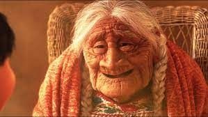
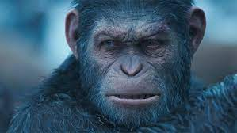
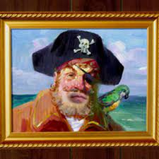
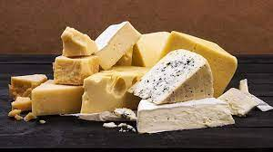
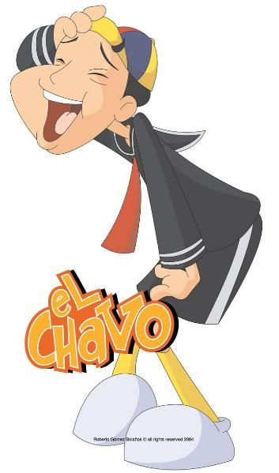
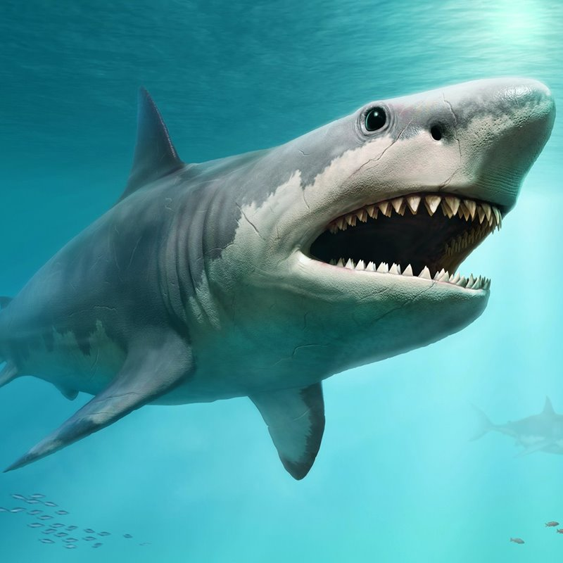
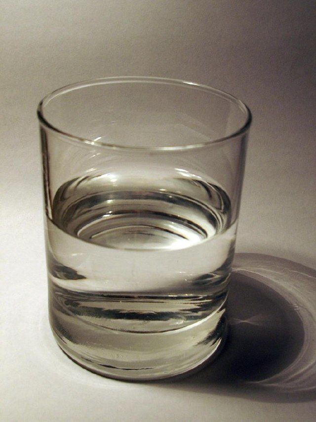

CASA
vivienda son: apartamento,
aposento, casa, domicilio, estancia, hogar,
lar, mansión, morada, piso, etc.
CALAMARDO
Stephen Hillenburg, el creador de la serie,
dijo que Calamardo es DE HECHO, un pulpo. No un calamar. ¡UN PULPO!
D

DELFIN
Son animales de naturaleza muy gregaria y
pueden llegar a formar grupos de cientos o miles,
pero normalmente el tamaño de estas
asociaciones es de 30 o menos
DELIVERY
delivery es el que ofrecen las empresas
para hacer las entregas a domicilio
de los productos que los clientes
compran vía online o por medios telefónicos.
DINOSAURIO
Los dinosaurios fueron un grupo de reptiles
que habitaron la Tierra en la era mesozoica ,
desde el período triásico superior hasta
fines del cretácico
E

ELEFANTE
Es el mamífero más grande de la tierra
puede pesar hasta ocho toneladas y mide
3 metros de alto por 7 de largo.
Con grandes orejas en forma de
abanico y una larga trompa.
ENANO
[persona] Que tiene una altura
sensiblemente menor de lo normal;
especialmente, que padece enanismo
ELEGANTE
Que lleva vestidos bien hechos y
armónicamente combinados y que
actúa y habla con naturalidad y distinción.
F
FOCO
Lámpara, generalmente dirigible,
que emite una luz muy intensa.
FOCA
Las focas habitan las regiones
costeras de buena parte del mundo,
con la excepción de las zonas tropicales.
FARO
Torre alta en las costas ,
con luz en su parte superior ,
para que durante la noche
sirva de señal a los navegantes
G

GATO
Tienen una flexibilidad y agilidad
impresionante, pueden saltar desde
más de 3 metros de altura.
GALLINA
Se denomina gallina a un ave que forma
parte del orden de las especies galliformes,
caracterizadas por su pico corto y
algo curvado, sus alas también cortas
y sus patas robustas
GANGSTER
Miembro de una bandaaa organizada
de malhechores que actúa en las
grandes ciudades
H
HUEVO
Cuerpo redondo u ovalado,
con una membrana o cáscara
exterior, que ponen las hembras
HAMBURGUESA
Una hamburguesa es un sándwich
hecho a base de carne molida o de
origen vegetal, aglutinada en forma
de filete cocinado a la parrilla
o a la plancha
HIPOPOTAMO
Poseen unas fuertes mandíbulas y
largos colmillos que no dudan en
emplear para atacar, además de
su enorme peso.
I
IGLESIA
La Iglesia transmite a cada creyente la fe
común y la articula en cada uno de ellos
a modo personal y comunitario
INDIGENTE
[persona] Que carece de lo necesario
para vivir o que lo tiene con escasez.
IGLU
iglú es un alojamiento temporal y
suele tener capacidad para un
máximo de dos o tres personas
J
JONAS
El profeta Jonás fue un siervo
de Dios diferente de los demás.
JARRA
Vasija de barro , porcelana ,
loza , cristal , etc., con cuello
y boca anchos
JASON
Jason es un héroe de la mitología griega.
Jasón y Medea, de Gustave Moreau
K
KILO
Unidad de masa del Sistema Internacional,
de símbolo kg, que equivale a la
masa del prototipo de platino iridiado
KARATE
El karate o kárate es un arte marcial tradicional
basada en algunos estilos de las artes marciales
chinas, y en menor medida en otras disciplinas
provenientes del sureste asiático
KOALA
El koala es una especie de marsupial diprotodonto
de la familia Phascolarctidae, endemico de Australia.
L
LAMPARA
son dispositivos que transforman una
energía eléctrica incluso química
en energía lumínica
LAMINA
Plancha de metal, especialmente de cobre,
en la que está grabado un dibujo
que se va a reproducir
después sobre una superficie
LUNA
La Luna es el único satélite
natural de la Tierra.
Con un diámetro ecuatorial de 3476 km
M

MAMÁ
ser unico y especial que existe
en la vida de todas las personas

MONO
mamíferos del orden de los primates
que se caracteriza por poseer cola,
en oposición a los grandes simios.

MARTE
Marte es el planeta interior más
alejado del Sol. Es un planeta telúrico
N
NUDO
Cosa inmaterial que liga o mantiene unidas
a dos o más personas o cosas.

NIRVANA
En la religión budista,
estado supremo de felicidad
plena que alcanza el alma
NICOTINA
Sustancia que se extrae de las hojas
del tabaco y que también se puede
producir sintéticamente;
es una droga tóxica
O

OSO
son una familia de mamíferos omnívoros.
Son animales de gran tamaño,
generalmente omnívoros
ORNITORRINCO
es una especie de mamífero
semiacuático endémico del
este de Australia y
de la isla de Tasmania.

OSO HORMIGUERO
oso hormiguero o yurumí, es un curioso
mamífero sudamericano que se
caracteriza por tener la cabeza
muy pequeña y el hocico largo
P
PANTERA
es simplemente un leopardo
con una característica
genética llamada melanismo
PERRO
El perro es un mamífero doméstico
que pertenece al grupo de los carnívoros

PIRATA
Persona que , junto con otras de
igual condición , se dedica al
abordaje de barcos en el mar para robar .
Q

QUESO
El queso es un alimento
rico en vitaminas A y D
QUIJOTE
Quijote de la Mancha
es una novela escrita por el
español Miguel de Cervantes Saavedra.

QUICO
Quico es un personaje de la
serie de televisión mexicana
El Chavo del Ocho.
R
RANA
Rana es un género de anfibios
anuros de la familia Ranidae,
que habita en Eurasia templada
hasta Indochina.

REINO
reino representa cada una de
las grandes subdivisiones
taxonómicas en las que se
clasifican los seres vivos
RINOCERONTE
Los rinocerontes son, junto con los
hipopótamos y los elefantes, uno de
los animales más grandes del mundo,
y también, uno de los mamíferos más antiguos
S
SARNA
especie unica de motin que se
encuntra en los cuarteles.
SIMIO
Primate con características
similares a las del ser humano (antropoide).
SONSO
En Bolivia es un homónimo que es bastante
usado por los habitantes para referirse
a alguien poco listo o usarlo como un sinónimo de tonto
T

TIBURON
Los selaquimorfos o selacimorfos son un
superorden de condrictios conocidos comunmente
con el nombre de tiburones o escualos.

TOMATE
es el fruto de la planta Solanum
lycopersicum, el cual tiene importancia culinaria
TETERA
Una tetera es el recipiente donde
se hierve el té (u otras infusiones)
U

UVA
La uva es la común denominación
que reciben los frutos formados en los racimos de la vida
UNICORNIO
Es una criatura mitológica del folclore
europeo representada habitualmente como
un caballo blanco con patas de antílope,
ojos y pelo de cabra
UTENSILIO
Objeto fabricado que es a propósito para un
determinado uso, en especial si es un uso
frecuente como el doméstico o artesanal
V
VAGO
[persona] Que tiene poca disposición para
hacer algo que requiere esfuerzo o constituye
una obligación, especialmente trabajar.
VACA
VACA es un animal mamífero, nace vivo del
vientre de la madre. Es también vertebrado
porque tiene huesos y herbívoro porque
se alimenta de hierba y pastos

VASO
Recipiente para líquidos que sirve para beber;
forma parte del servicio de mesa y generalmente
es de vidrio, de forma cilíndrica o ligeramente cónica
X
XILOFONO
xilófono es un instrumento
de percusión que pertenece
al grupo de instrumentos idiófono
XENOFOBIA
Sentimiento de odio, repugnancia y
hostilidad hacia lo extranjero.
XIAOMI
marca internacional que busca acercar
la tecnología a todo el mundo
Y
YEGUA
Una yegua es una yegua adulta u otro equino.

YOYO
El yo-yo es un juguete formado por un disco de madera,
de plástico o de otros materiales
con una ranura profunda en el centro de todo el borde

YOGA
El yoga es una de las seis dárshanas
(doctrinas) ortodoxas del hinduismo
Z
ZAPATO
La palabra zapato parece venir del árabe en euskera
hay una palabra muy similar (zapa) que significa pisar,
ZORRO
En la cultura occidental,
el zorro es considerado un animal muy
astuto y es empleado como símbolo de astucia en muchos
ZANAHORIA
Es una de las hortalizas más producidas y
consumidas en el mundo. Destaca
en su composición el betacaroteno

 COHETE
COHETE